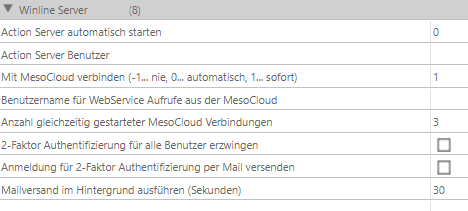
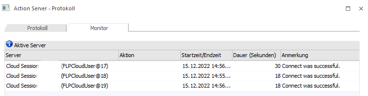
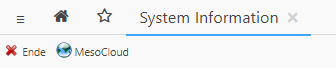
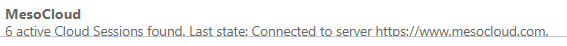

Wird ein WinLine System Server verwendet, so kann sich dieser merken, welche der Verbindungen MesoCloud-Verbindungen (Sessions) sind. In Kombination damit wird der WinLine System Server von jedem WinLine Server alle 30 Sekunden nach der Anzahl der gestarteten MesoCloud-Sessions befragt. Der Systemserver startet neue Sessions, falls die ursprüngliche Anzahl konfigurierter Sessions kleiner ist.
Daraus ergibt sich, dass beim Ausfall eines dezidierten WinLine System Servers (bei dem alle Benutzer-Sessions automatisch beendet werden) nach dem Neustart des System Servers auch die MesoCloud-Sessions wieder automatisch neu gestartet werden.
Folgende Einstellung müssen im Register "WinLine Server" getätigt werden:
Ø Mit MesoCloud verbinden
Nur wenn "1" eingetragen ist, wirkt der zuvor beschriebene Mechanismus. Beim automatischen Start (Wert "0") wird nur einmal gestartet.
Ø Benutzername für WebService Aufrufe aus der MesoCloud
Ist hier nichts eingetragen, dann wird der automatisch erzeugte "FLPCloudUser" verwendet.
Ø Anzahl gleichzeitig gestarteter MesoCloud Verbindungen
Es handelt sich dabei um die Anzahl der Sessions, die automatisch gestartet werden. MesoCloud-Sessions werden (wie die Action Server Sessions) im Protokoll des Action Servers angezeigt und können dort (in der CWL-Sitzung) via Entf-Taste entfernt werden - werden dann aber vom Server nach kurzer Zeit wieder automatisch neu gestartet.


Ø Zusätzliche MesoCloud-Sitzungen starten

In der WinLine mobile gibt es im Fenster "System Info" den "MesoCloud"-Button. Dieser ist nicht ausgegraut, wenn die MesoCloud-Sitzungen in den Einstellungen eingeschaltet sind und der Benutzer zusätzlich Administrator ist.
So können (über die konfigurierte Anzahl hinaus) weitere MesoCloud-Sitzungen gestartet werden. In der darunter liegenden Tabelle wird bei "MesoCloud" der Status der Sessions angezeigt (entweder mit Angabe eines Fehlers, oder mit Angabe der Anzahl der aktuell laufenden Sitzungen).
